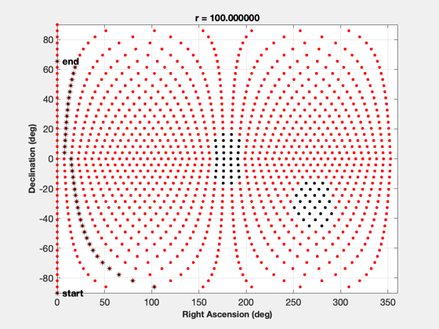
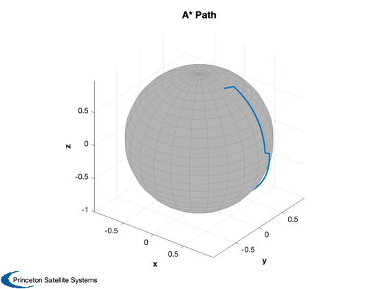

Demonstrate A* for a close orbital maneuver.
------------------------------------------------------------------------
See also AStarSearch, GenerateGrid, RaDec2U, Plot3D, TextS, Unit
------------------------------------------------------------------------
Contents
Define the grid
n = 48;
r = 100;
stayout(2).u = Unit([0;1.0;.6]);
stayout(2).angle = pi/10;
stayout(2).rOffset = [0;0;0];
stayout(1).u = Unit([1;0;0]);
stayout(1).angle = pi/10;
stayout(1).rOffset = [0;0;0];
[rA, dec, a, kDec] = GenerateGrid( n, r, stayout, 'globe' );
d.myData.dec = dec;
d.myData.rA = rA;
d.myData.a = a;
d.myData.kDec = kDec;
d.myData.n = length(a);
d.myData.v = [1;0;0];
d.n = length(a);
startNode = 1;
endNode = 1113;
We use the same function for path cost and maneuver cost
d.pathCostEstimateFunction = 'ManeuverCost';
d.traverseCostFunction = 'ManeuverCost';
d.successorNodesFunction = 'ManeuverSuccessorNodes';
path = AStarSearch( startNode, endNode, d );
GenerateGrid( n, r, stayout, 'globe' );
if( ~isempty(path) )
hold on
disp(path)
rA = d.myData.rA(path);
dec = d.myData.dec(path);
plot(rA,dec,'k*')
TextS(rA(1),dec(1),' start');
TextS(rA(end),dec(end),' end' );
uPath = RaDec2U( rA*pi/180,dec*pi/180 );
Plot3D( uPath,'x','y','z','A* Path',0.98 );
end
Columns 1 through 6
1 4 11 20 31 44
Columns 7 through 12
59 76 95 116 139 164
Columns 13 through 18
191 220 251 284 319 356
Columns 19 through 24
395 436 479 524 571 619
Columns 25 through 30
666 711 754 795 834 871
Columns 31 through 36
906 939 970 999 1026 1051
Columns 37 through 39
1074 1095 1113
 